Roadmapping isn’t an exercise reserved solely for product teams—or rather, it shouldn’t be.
Roadmaps are communication tools and are perfect vehicles for teams of all kinds to share their priorities and goals with the rest of the organization.
To help you out, we created seven templates that can be used across your organization to boost visibility into high-level business strategy and more tactical team-based goals.
1. The product roadmap
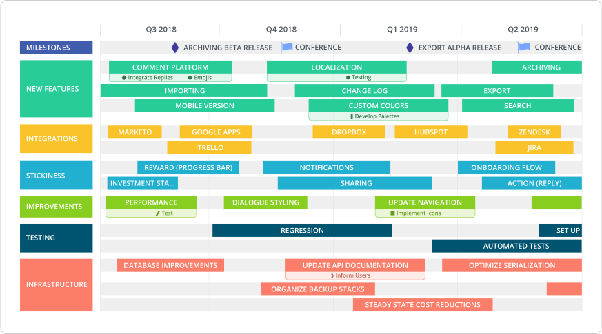
Let’s start with the bread and butter of roadmaps: product.
For product-driven companies—be it B2B SaaS shops or consumer-facing apps—a product roadmap is essential to organizational alignment. A product roadmap illustrates high-level product strategy and demonstrates how a product will evolve over time. It includes upcoming features and the nitty gritty of product development—like technical considerations and resourcing.
A product roadmap is a powerful communication tool that product managers use to align different departments on one vision. It empowers the sales team to lead informed product conversations with prospects, the marketing team to plan campaigns that align with feature releases and HR to determine who to hire and when.
Our product roadmap template was built knowing that there isn’t just one way to create a product roadmap. Some product teams love key dates, while others prefer an agile approach.
For deadline-sticklers, our template’s timeline view charts how your product will grow and evolve over time. You can organize your team’s tasks into pre-set buckets—including new features, infrastructure and stickiness. You can also highlight important events, like a feature release, with milestones.
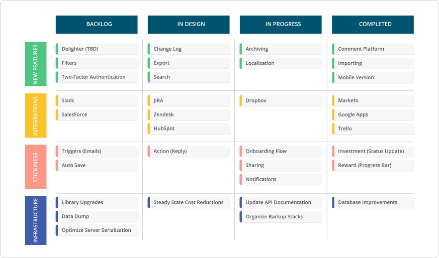
The swimlane view (above) sorts your tasks according to progress, not time.
Give our product roadmap template a whirl.
P.S. For organizations with multiple product lines, our portfolio roadmap template makes it possible to illustrate and communicate a high-level overview of how each different products will evolve and how they relate to each other. Try the portfolio roadmap template.
If you're an agile product team, check out our guide to creating any style of agile roadmapping.
2. The strategic roadmap
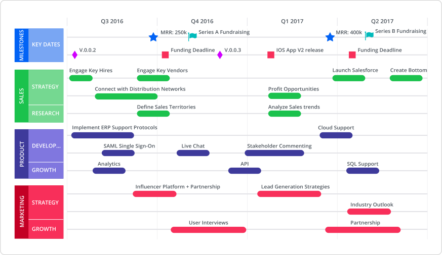
A strategic roadmap is used to communicate an organization’s vision and mission, illustrating the key steps required to bring these two things to fruition. This roadmap is accessible to every employee, and it helps ensure that every department is ideating and working on initiatives that serve the organization’s bigger strategic aims.
This particular roadmap is created and championed by senior-level stakeholders. Business objectives are generally mapped out across the long-term.
Unlike a product roadmap that outlines what plans need to be executed in the short-term, a strategic roadmap is all about the long game. An organization’s vision and mission are often hefty, audacious goals that can be broken down into smaller, bite-size initiatives across many years.
Our strategic roadmap template includes a timeline view. Use this view to track your key strategic initiatives and milestones over upcoming months, quarters and years.
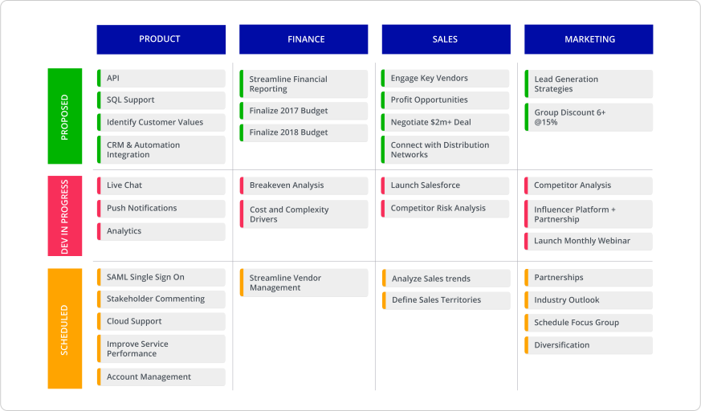
Alternately, if you wish to be less strict with dates, our swimlane view visualizes your strategic initiatives based on progress.
Lay out your vision and mission-critical business objectives with our strategic roadmaps.
3. The innovation roadmap
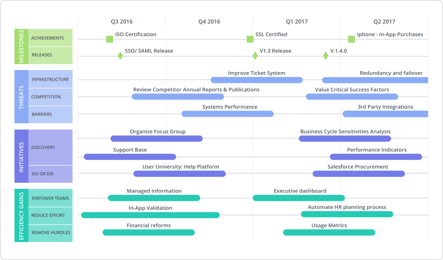
An innovation roadmap is a great companion to the strategic roadmap. A roadmap can and should be used to map new areas for growth opportunities, testing new ideas, tracking competitors and keeping up with advancing technologies. Organizations only remain competitive within their markets when they continuously look forward to discover new business models and ways to bolster their products with value-added improvements.
An innovation roadmap is generally built and managed by an organization’s product managers and its executives to align all departments on strategic initiatives. They help companies achieve disruption and avoid getting disrupted themselves.
Track innovative achievements, like shipped features, against the work that your team is doing to keep sharp—like competitive benchmarking and breaking down barriers preventing new and exciting things from shipping.
Our innovation roadmap template includes a timeline view to plan and track what your organization is doing in upcoming quarters and years, while also accessing and preparing for risks.
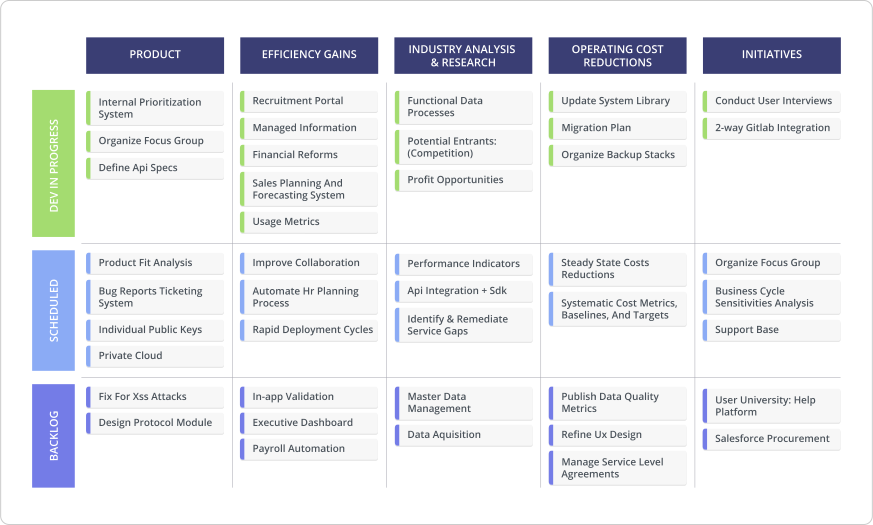
The swimlane view provides a flexible way to keep track of your game-changing ideas by visualizing progress across key verticals like product and efficiency gains.
Document your disruption tactics with our innovation roadmap template.
Need help finding the right roadmapping tool for you? We have a guide to help with that.
4. The marketing roadmap
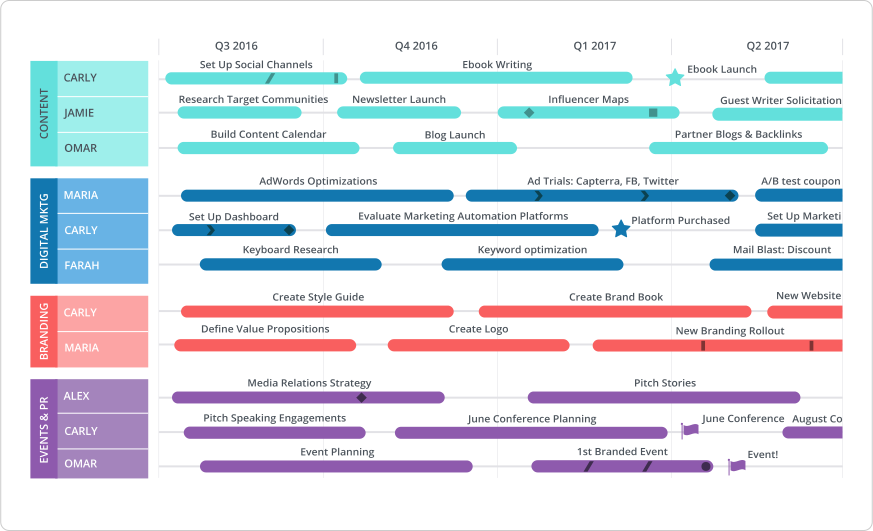
Marketing teams are generally project-oriented, and it’s very common for marketing teams to be slammed with multiple deliverables and initiatives at once. It gets hectic and unmanageable if not documented. Enter the marketing roadmap.
A marketing roadmap highlights key projects and priorities across all marketing channels and functions, creating clarity in the chaos. It charts all priorities and initiatives across all channels that marketing is responsible for—such as content, digital advertising and events. Creating an in-depth marketing roadmap surfaces a team’s highest priorities and keeps all of its marketers on track.
As an added bonus, a marketing roadmap also serves as a key communication tool for marketing teams to share their plans across their whole organization.
Our marketing roadmap template comes with two types of views baked in. The timeline view allows you to meticulously plan when key initiatives will unfold across each of your marketing channels.
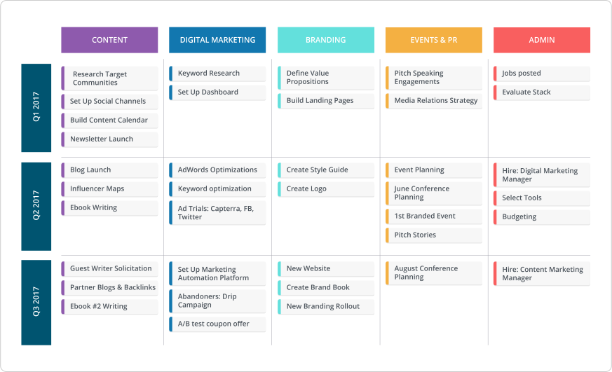
Our swimlane view groups your marketing initiatives into channels and manageable, easy-to-understand timeframes, like quarters.
Organize your marketing team and initiatives with our marketing roadmap template.
5. The HR roadmap
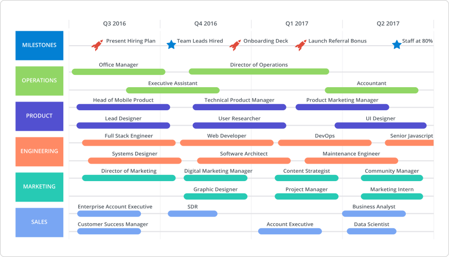
An HR roadmap is owned by an organization’s recruiters and human resources team to build and manage hiring plans and chart HR initiatives. It visualizes how each department within an organization will evolve and provides a snapshot of the roles being added and when.
This type of roadmap is extremely helpful for catching gaps in talent, ensuring that your organization is adequately resourced and that growth is properly balanced across departments. Each department leader can also use this roadmap to flag what resources they need and identify when their team will burst.
This roadmap also provides insight into what HR is working on to make employees happier in their day-to-day like changes to benefits plan, new referral bonuses, etc.
Our HR roadmap template includes a timeline view so that your organization can see which new hires will be added to the team in upcoming months, quarters or years.
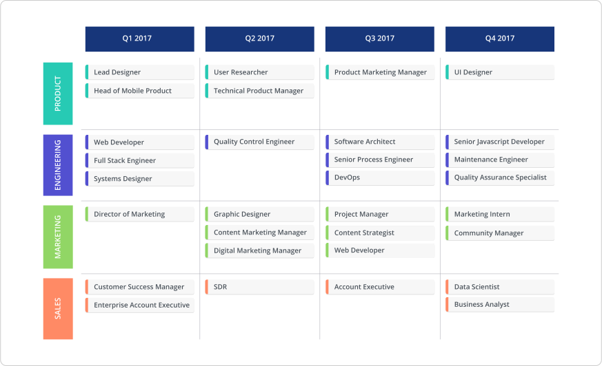
Predicting exact hiring dates isn’t always possible given that some roles are more difficult to fill than others. Our swimlane view brings flexibility to your HR plan.
Start mapping your hiring and HR initiatives with our HR roadmap template.
6. The technology roadmap
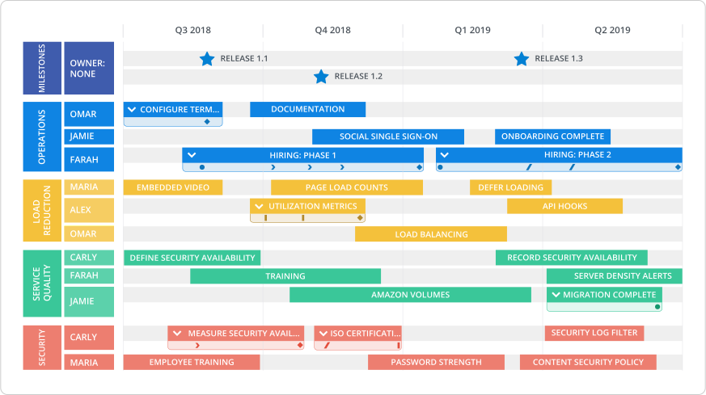
A technology roadmap outlines how an organization plans to use technology to achieve their goals. It can be used in a couple of different ways.
Some organizations employ a technology roadmap to monitor technology considerations and resources within their product’s research and development strategy. Other organizations use a technology roadmap to visualize the administration of internal processes and systems, like information security audits and tracking employee hardware.
In both cases, a technology roadmap communicates complex initiatives within an easy-to-follow, actionable plan.
Our technology roadmap template’s timeline view enables you to simply visualize timing for all technology initiatives coming up in your pipeline.
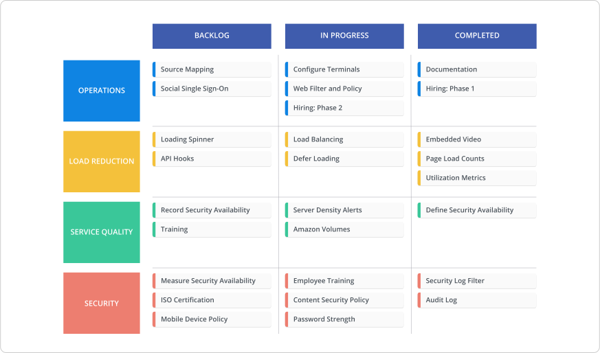
Our swimlane view provides a high-level snapshot of your technical priorities, and it tracks the progress of initiatives that are in progress, completed or within the backlog.
Turn your complex technology initiatives into an easy-to-read roadmap with our template.
We cover 10 more ways to build a powerful technology roadmap in our free downloadable guide..
7. The project roadmap
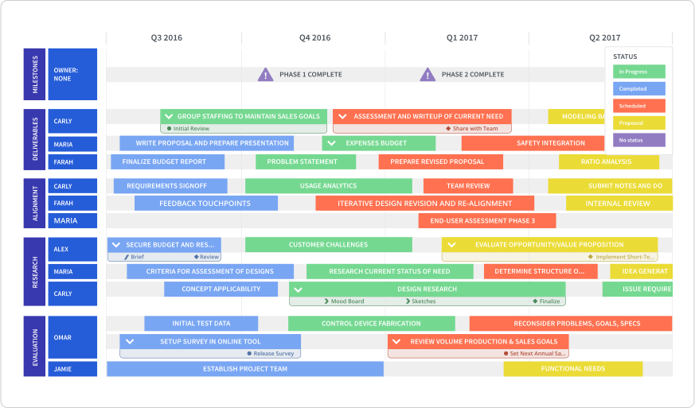
A project roadmap can be used by various departments across your organization—sales, customer success, admin, etc.
It’s a roadmap that can be applied to a wide range of projects that involve multiple stakeholders and moving parts. It provides a high-level overview of a project’s objectives, initiatives and deliverables.
A project roadmap is different from a project plan. While a project plan tracks each and every tactical detail, a project roadmap instead provides an overview of the most important components and milestones (i.e. the big picture). It aligns teams on key milestones and keeps everyone on the right path.
Use the timeline view of our project roadmap template to see key tasks and deadlines, and how your resources will be allocated over time.
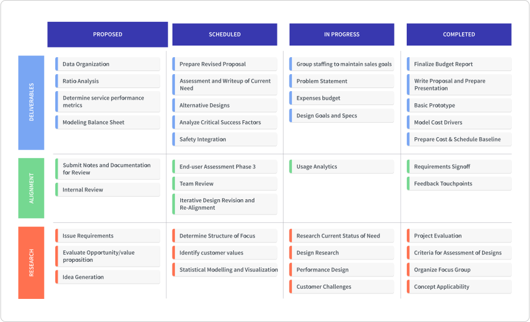
Our swimlane view makes it easy to quickly visualize which tasks are complete, in progress or waiting in the backlog.